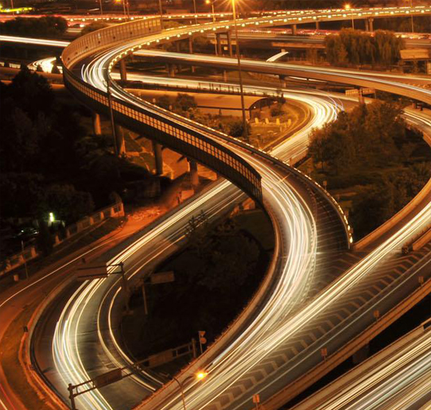

区域交通
WONDERLAND MANSION
地铁14号线西延青龙湖
作为连通北京西南地区和东北地区的地铁14号线，其二期将通至青龙湖国际文化会都，从张郭庄站向西南方向延长，连接王佐、云岗地区，并在会都区域内设有4站，预计2015年开始建设。建成后，从燕西华府可直达京城交通核心区。
河西轨道T2线2015年开通
2014年丰台区将开工建设河西轨道T1、T2线一期工程，总长约45公里。其中T2线西起青龙湖地区，途经燕西华府，在张郭庄进行换乘，目前已动工，预计2015年通车。
便捷高效的路网交通
燕西华府地处西六环在青龙湖出口旁，接驳莲石路、京石高速等多条高速路网，从燕西华府出发一路通畅，20分钟直达金融街、万柳、公主坟、天安门等城市核心区。